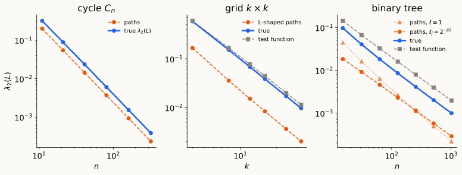
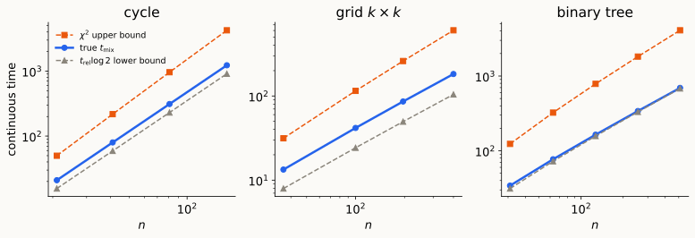

Test functions · canonical paths · cycle, grid, binary tree · how tight are the bounds?
Gap \(\Rightarrow\) mixing. \(\;\operatorname{Var}_\pi(H_th)\le e^{-2\lambda t}\operatorname{Var}_\pi(h)\) and \[t_{\rm rel}\log\tfrac1{2\varepsilon}\ \le\ t_{\rm mix}(\varepsilon)\ \le\ t_{\rm rel}\Big(\tfrac12\log\tfrac1{\pi_{\min}}+\log\tfrac1{2\varepsilon}\Big),\qquad t_{\rm rel}=1/\lambda.\]
Poincaré. \(\lambda=\min_f\mathcal E(f,f)/\operatorname{Var}_\pi(f)\) is the best constant in \(\lambda\operatorname{Var}_\pi(f)\le\mathcal E(f,f)\).
So everything hinges on \(\lambda\). Given a graph, how do we bound \(\lambda\) from above and from below?
Upper bounds: test functions. Any non-constant \(f\): \(\;\lambda\le\mathcal E(f,f)/\operatorname{Var}_\pi(f)\). Make \(f\) change slowly across a bottleneck.
Degree comparison. If \(d_{\min}\le d_i\le d_{\max}\):
\[ \frac{\lambda_2(L)}{d_{\max}}\le\lambda = \lambda_2(L_{rw})\le\frac{\lambda_2(L)}{d_{\min}}. \]
(Both are \(\min_f f^\top Lf\,/\min_c\|f-c\|_m^2\), with \(m = d\) vs. \(m = \mathbf 1\).) Our examples have \(1\le d\le4\): work with \(L\).
Lower bounds: canonical paths — the discrete version of the 1-D Poincaré proof:
\[ f(b)-f(a) = \int_a^bf'\quad+\quad\text{Cauchy–Schwarz}. \]
For each ordered pair \((a,b)\) choose a path \(\gamma_{ab}\); choose edge lengths \(\ell_e>0\) (default \(\ell\equiv1\)). Congestion:
\[ \kappa := \max_{e\in E}\ \frac1{w_e\ell_e}\sum_{(a,b):\,e\in\gamma_{ab}}\ell(\gamma_{ab}),\qquad\ell(\gamma) = \sum_{e\in\gamma}\ell_e . \]
Theorem (Jerrum–Sinclair; Diaconis–Stroock). \(\;\sum_{a,b}(f_a-f_b)^2\le\kappa\,f^\top Lf\), hence \(\;\lambda_2(L)\ge\dfrac{2n}\kappa\).
Proof. \((f_b - f_a)^2 = \big(\sum_{e\in\gamma_{ab}}\nabla_ef\big)^2\le\ell(\gamma_{ab})\sum_{e\in\gamma_{ab}}\frac{(\nabla_ef)^2}{\ell_e}\). Sum over pairs, swap sums:
\[ \sum_{a,b}(f_a-f_b)^2\le\sum_ew_e(\nabla_ef)^2\cdot\underbrace{\frac{1}{w_e\ell_e}\sum_{\gamma_{ab}\ni e}\ell(\gamma_{ab})}_{\le\kappa},\qquad\sum_{a,b}(f_a-f_b)^2 = 2n\|f-\bar f\|^2 . \ \square \]
Exact (Fourier): \(L\) has eigenvalues \(2-2\cos(2\pi j/n)\); since \(D = 2I\), \(\;L_{rw} = L/2\) and \[\lambda = 1-\cos\tfrac{2\pi}n = 2\sin^2\tfrac\pi n\approx\frac{2\pi^2}{n^2}\approx\frac{19.7}{n^2}.\]
Canonical paths (\(n = 2m+1\), shortest paths, \(\ell\equiv1\)): each vertex has 2 vertices at each distance \(s = 1,\dots,m\). By rotation symmetry all edges carry equal load:
\[ \kappa = \frac1n\sum_{(a,b)}|\gamma_{ab}|^2 = 2\sum_{s=1}^ms^2 = \frac{n(n^2-1)}{12} \qquad\Longrightarrow\qquad \lambda_2(L)\ge\frac{2n}{\kappa} = \frac{24}{n^2-1}. \]
Divide by \(d = 2\) to compare with the exact \(\lambda\): \[ \frac{12}{n^2-1}\ \le\ \lambda\ \approx\ \frac{19.7}{n^2}. \] Right order; constant \(12\) vs. \(2\pi^2\approx19.7\).
Test function \(f(x,y) = x - \frac{k+1}2\): only horizontal edges see a difference (each 1),
\[ \lambda_2(L)\le\frac{k(k-1)}{k\cdot k(k^2-1)/12} = \frac{12}{k(k+1)},\qquad\lambda\le\frac{6}{k(k+1)}\ \ (d_{\min} = 2). \]
Canonical paths, “L-shaped”: horizontal along \(a\)’s row to \(b\)’s column, then vertical. Length \(\le2(k-1)\).
\[ \kappa\le\frac{k^3}2\cdot2(k-1)\quad\Longrightarrow\quad\lambda_2(L)\ge\frac{2}{k(k-1)},\qquad\lambda\ge\frac1{2k(k-1)}\ \ (d_{\max} = 4). \]
So \(\lambda = \Theta(1/k^2) = \Theta(1/n)\). (Exact: \(\lambda_2(L) = 2-2\cos\frac\pi k\approx\frac{\pi^2}{k^2}\), via \(L(G\,\square\,H) = L_G\otimes I + I\otimes L_H\) and the Neumann cosines of the path.)
Test function: \(+1\) on the left subtree, \(-1\) on the right, \(0\) at the root.
\[ \lambda\le\frac{2}{2n-4} = \frac1{n-2}. \]
The root is a bottleneck: cutting a single root edge separates two halves of size \(\approx n/2\), a set of conductance \(1/(n-2)\approx1/n\). (Cheeger, Lecture 6.)
Paths are forced. An edge at depth \(j\) cuts off \(s_j = 2^{h-j+1}-1\) vertices: used by \(2s_j(n-s_j)\le n^2/2\) ordered pairs.
Unit lengths: \(|\gamma|\le2h\), so \(\kappa\le n^2h\) and \(\;\lambda_2(L)\ge\dfrac{2}{nh}\) — off by \(\log_2n\). Cauchy–Schwarz charges every edge of a long path equally, but only the top edges are congested.
Weighted lengths \(\ell_e = 2^{-j/2}\) at depth \(j\) (cheap where congested): \(\ell(\gamma)\le2\sum_{j\ge1}2^{-j/2} = 2(\sqrt2+1)\), and with \(s_j<(n+1)2^{-j}\),
\[ \frac1{\ell_e}\sum_{\gamma\ni e}\ell(\gamma)\le2^{j/2}\cdot2s_jn\cdot2(\sqrt2+1) < 2(2+\sqrt2)\,n(n+1) \quad\Longrightarrow\quad \lambda_2(L) > \frac{1}{(2+\sqrt2)(n+1)}. \]
With \(d\le3\): \(\;\dfrac{1}{3(2+\sqrt2)(n+1)}<\lambda\le\dfrac1{n-2}\), so \(\lambda = \Theta(1/n)\).

Parallel lines = right order. Unit-length paths on the tree drift away by \(\log n\).

| \(t_{\rm rel}\) | \(\chi^2\) upper bound | true \(t_{\rm mix}\) | |
|---|---|---|---|
| cycle | \(\Theta(n^2)\) | \(\Theta(n^2\log n)\) | \(\Theta(n^2)\) |
| grid | \(\Theta(n)\) | \(\Theta(n\log n)\) | \(\Theta(n)\) |
| binary tree | \(\Theta(n)\) | \(\Theta(n\log n)\) | \(\Theta(n)\) |
Exactly, from the spectral expansion of \(h_0 = \mathbf 1_x/\pi_x\):
\[ \chi^2(\delta_xH_t\Vert\pi) = \sum_{k\ge2}e^{-2\lambda_kt}\varphi_k(x)^2,\qquad\sum_k\varphi_k(x)^2 = \frac1{\pi_x}. \]
The generic bound pretends all \(n-1\) modes decay as slowly as \(\varphi_2\).
Vertex-transitive graphs: \(\chi^2(\delta_xH_t\Vert\pi) = \sum_{k\ge2}e^{-2\lambda_kt}\). Cycle: \(1-\cos\theta\ge\frac{2\theta^2}{\pi^2}\) gives
\[ \chi^2(\delta_xH_t\Vert\pi)\le2\sum_{j\ge1}e^{-16tj^2/n^2} = O(1)\quad\text{at } t = \Theta(n^2). \]
So even \(\ell^2\)-mixing on the cycle is \(\Theta(n^2)\), not \(n^2\log n\).
Hypercube \(\{0,1\}^d\), \(n = 2^d\) (flip a uniform coordinate at rate 1): eigenvalues \(\frac{2|S|}d\), \(S\subseteq[d]\), so \(t_{\rm rel} = d/2\), and exactly
\[ \chi^2(\delta_xH_t\Vert\pi) = \big(1+e^{-4t/d}\big)^d - 1 \]
which is \(O(1)\) iff \(t\ge\frac d4\log d - O(d)\). TV has a cutoff at the same time (Diaconis; LPW).
| lower: \(t_{\rm rel}\) | upper: \(\chi^2\) + gap | upper: entropy + LSI | truth | |
|---|---|---|---|---|
| hypercube | \(\Theta(d)\) | \(\Theta(d^2)\) | \(\Theta(d\log d)\) | \(\sim\frac d4\log d\) |
LSI constant \(\Theta(1/d)\) (tensorization), and \(\log\log(1/\pi_{\min}) = \log(d\log2)\): tight. The motivating example for log-Sobolev inequalities.
Graph. \(G = (V,E,w)\) undirected, connected; \(d_i = \sum_jw_{ij}\); \(\mathrm{vol}(S) = \sum_{i\in S}d_i\); \(\pi_i = d_i/\mathrm{vol}(V)\), \(\Pi = \operatorname{diag}(\pi)\).
Gradient / divergence. \((\nabla f)(i\to j) = f_j - f_i\); \(\operatorname{div}_m = -\nabla_m^*\) w.r.t. \(\langle\cdot,\cdot\rangle_w\) on edges and \(\langle\cdot,\cdot\rangle_m\) on vertices. \(\nabla^*\nabla = L = D-A\); \(\nabla_d^*\nabla = L_{rw} = D^{-1}L = I-P\); \(\mathcal L = D^{-1/2}LD^{-1/2}\).
Dirichlet form. \(\mathcal E(f,g) = \langle f,L_{rw}g\rangle_\pi = \frac1{\mathrm{vol}(V)}\sum_{\{i,j\}\in E}w_{ij}(f_i-f_j)(g_i-g_j)\).
Walk. \(P = D^{-1}A\); measures \(\mu^\top P\), functions \(Pf\). Random-walk Laplacian \(L_{rw} = I - P\). Continuous time \(H_t = e^{-tL_{rw}}\), generator \(\mathcal A = P - I = -L_{rw}\). Lazy: \(P_{\rm lazy} = \frac12(I+P)\).
Reversibility. \(\Pi P = P^\top\Pi\); densities \(h = \mu/\pi\) evolve as \(h_t = H_th_0\).
Gap / Poincaré. \(\lambda = \lambda_2(L_{rw}) = \min_f\mathcal E(f,f)/\operatorname{Var}_\pi(f)\); \(t_{\rm rel} = 1/\lambda\).
Distances. \(\|\mu-\pi\|_{TV} = \frac12\mathbb E_\pi|h-1|\); \(\chi^2(\mu\Vert\pi) = \operatorname{Var}_\pi(h)\); \(D(\mu\Vert\pi) = \operatorname{Ent}_\pi(h)\). \(\;2\,\mathrm{TV}\le\sqrt{\chi^2}\); \(\mathrm{TV}\le\sqrt{D/2}\); \(D\le\log(1+\chi^2)\).
Mixing time. \(d(t) = \max_x\|\delta_xH_t-\pi\|_{TV}\); \(t_{\rm mix}(\varepsilon) = \min\{t: d(t)\le\varepsilon\}\).
χ² decay. \(\operatorname{Var}_\pi(H_th)\le e^{-2\lambda t}\operatorname{Var}_\pi(h)\); \(\frac d{dt}\operatorname{Var}_\pi(h_t) = -2\mathcal E(h_t,h_t)\).
Mixing from the gap. \(\frac1\lambda\log\frac1{2\varepsilon}\le t_{\rm mix}(\varepsilon)\le\frac1\lambda\big(\frac12\log\frac1{\pi_{\min}}+\log\frac1{2\varepsilon}\big)\).
Entropy. \(\frac d{dt}\operatorname{Ent}_\pi(h_t) = -\mathcal E(h_t,\log h_t)\). MLSI \(\rho_0\operatorname{Ent}_\pi(h)\le\mathcal E(h,\log h)\) \(\Rightarrow\) \(D(\mu_t\Vert\pi)\le e^{-\rho_0t}D(\mu_0\Vert\pi)\); \(\;\rho_0\le2\lambda\).
Canonical paths. \(\kappa = \max_e\frac1{w_e\ell_e}\sum_{\gamma_{ab}\ni e}\ell(\gamma_{ab})\) \(\Rightarrow\) \(\lambda_2(L)\ge2n/\kappa\). Degree comparison: \(\lambda_2(L)/d_{\max}\le\lambda\le\lambda_2(L)/d_{\min}\).